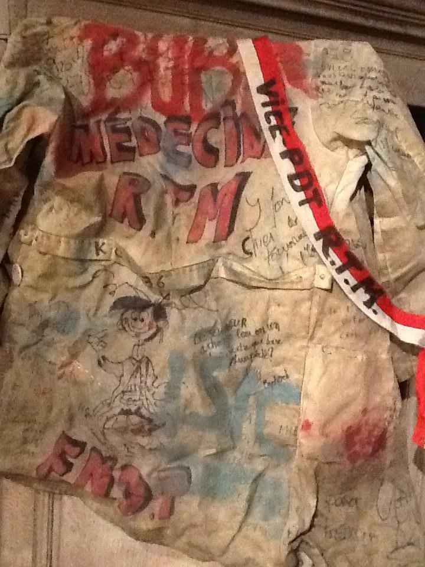
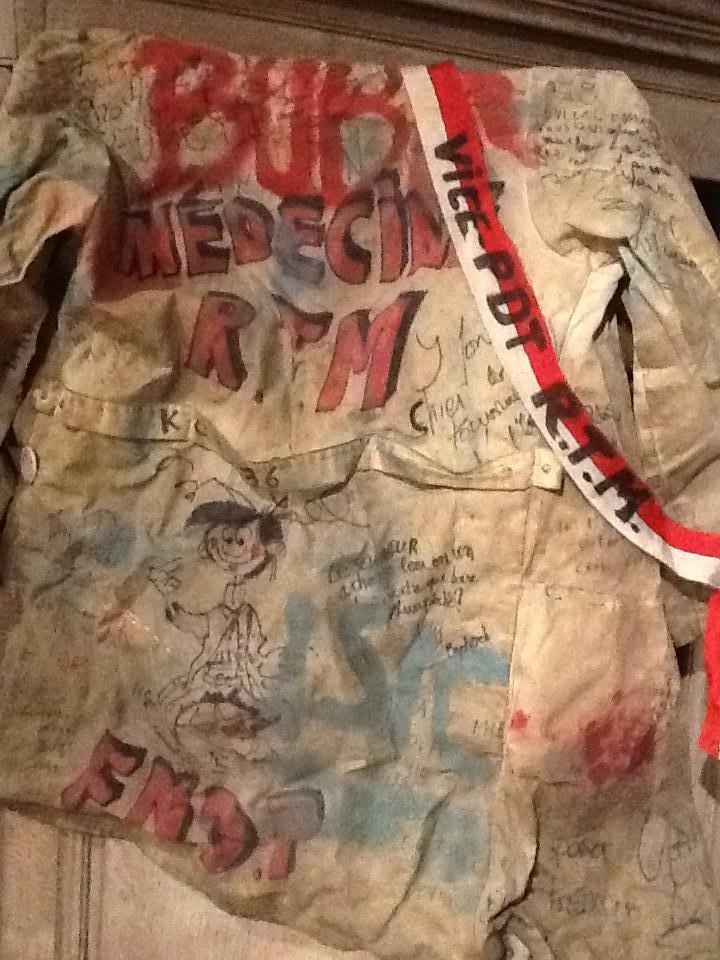
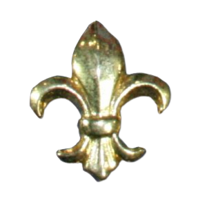
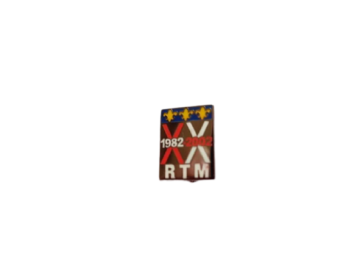

La Lux
D’après le Syllabus de Calotte Lux de Namur
La Régionale Luxembourgeoise des Etudiants de Namur, communément dénommée ci-après « la LUX » a été fondée en septembre 1985 par Jean-Luc Neyens (Praeses), Jean-Marc Crépin (Vice-Praeses) et Alain Barbillon (membres fondateurs et premiers calottés).
Lionel Grégoire et Guillaume Loute, “Syllabus de Calotte LUX de Namur “, 09/02/1997 Sur le senestre avant de la calotte, à gauche des insignes de sa provenance, chaque Lux portera une bande aux couleurs de la régionale par fierté de poser ses couleurs et par tradition.
L’emblème de la Régionale est la Hure (tête de sanglier). Chaque membre de la LUX devra apposer ladite Hure sur sa calotte du côté droit de la couronne, le regard face à elle.
Les personnes non-membres de la Régionale ne pourront apposer la Hure sur leur calotte qu’après une épreuve à décider par le comité, et par l’assentiment du conseil C.I.R. du présent article. Dès adoption de celui-ci par le conseil C.I.R., la Régionale se verra enfin attribuer le rôle de gardienne de son emblème.
L’emblème provincial (burelé d’azur et d’argent de dix pièces, au lion de gueule armé, lampassé et couronné d’or) ne peut en aucun cas être considéré comme celui de la Régionale.
Lionel Grégoire et Guillaume Loute, “Syllabus de Calotte LUX de Namur “, 09/02/1997
Les Hures d'Or
Le Xème anniversaire de la LUX a eu comme principale activité la remise de Hures d’Or (...) à une dizaine de personnalités issues de la Province.
Cette remise de Hures d’Or, descendant des Césars, a été effectuée lors d’une soirée organisée à l’Arsenal. (...) Outre cette soirée, la LUX avait finalement gardé l’Arsenal pour tout le week-end puisque, dès le lendemain et le dimanche se tenait un marché artisanal des produits de leur terroir.
Les confréries furent nombreuses, ainsi que les autres Régionales du site.
Lionel Grégoire et Guillaume Loute, “Syllabus de Calotte LUX de Namur “, 09/02/1997


L’opération Sanglier d’Argent
Cette idée est venue de Bastian Loute (Praeses) ou Jean-François Louis (Magnus Magister), le but était de se faire connaître et de faire un record, vint alors l’idée de réaliser un énorme sanglier en pièces de 1 Franc. La Reine Astrid, Présidente d’Honneur de la Croix-Rouge et Luxembourgeoise, était invitée, mais n’est pas venue. Cette soirée eut cependant lieu dans le lieu le plus chic de Namur, à savoir le Théâtre Royal.
Ce soir-là, après des kilomètres de bitume parcourus, le discours fut fait par Mme Paulette Deschamps, Députée Permanente. Ensuite, une brève présentation, une invitation à contempler le sanglier et la remise d’un chèque de 121 000 Francs.
Lionel Dehart, 26 Janvier 2020
L’Ordre de la Hure
L’Ordre de la Hure a été fondé le 5 mai 1988 – Mille Neuf Cent Quatre-Vingt-Huit – par David Pierson et Eric Fontaine.
L’Ordre de la Hure est accordé à tout membre de la LUX qui aura participé activement au développement de celle-ci. Cette distinction peut être remise à une personne extérieure à la Régionale pour les mêmes raisons.
Les personnes citées se voient remettre un diplôme les instituant Chevaliers de la Hure et les autorisant à en porter les insignes, à savoir : une croix à cinq branches émaillées de bleu ; au centre se trouve une hure dorée sur fond bleu ; la croix est suspendue à un ruban rouge-blanc-bleu et se porte à gauche. (...)
Il existe également les titres d’Officier (petite étoile dorée apposée sur le ruban du vlek de Chevalier) et de Commandeur (une autre étoile ajoutée) de la Hure qui sont les grades respectivement supérieurs à Chevalier.
Les grades sont décernés par le Grand-Maître de l’ordre s’il possède déjà le grade ou par le plus ancien ancien Grand-Maître possédant le grade dans le cas premier.
Les membres extra-muros décorés devront apposer une palme sur le ruban de leur vlek, et ce afin de le distinguer.
Le Grand-Maître de la LUX est, de plein droit, Grand-Maître de l’Ordre de la Hure, il porte un collier blanc auquel est suspendue une croix à cinq branches émaillées de bleu, le tout surmonté d’une couronne. Ce collier, qui appartient à la Régionale, se transmet de Grand-Maître à Grand-Maître, les anciens Grands-Maîtres portant le même collier de couleur rouge
Lionel Grégoire et Guillaume Loute, “Syllabus de Calotte LUX de Namur “, 09/02/1997
L'Ordre de la Harde
La Harde a été créée en 1998 par le XIVe président LUX Jean-François Louis. C’est un vlek externe. La personne remettant le vlek est appelé(e) gardien(ne) et est détenu par le président de l’année en cours.
La personne calottée qui se verra vlekée de la Harde pourra apposer sur son calot les trois symboles de la Harde, à savoir :
le cerf ;
le loup bâté ;
le sanglier sur pattes.
Le gardien, recevra à sa nomination le collier de gardien de la Harde, composé d’un ruban aux couleurs de la Province, attaché à une médaille à cinq branches, avec un cerf en son centre.
Lionel Grégoire et Guillaume Loute, “Syllabus de Calotte LUX de Namur “, 09/02/1997
 

 |
 |  |
 |
 |
 |
 |